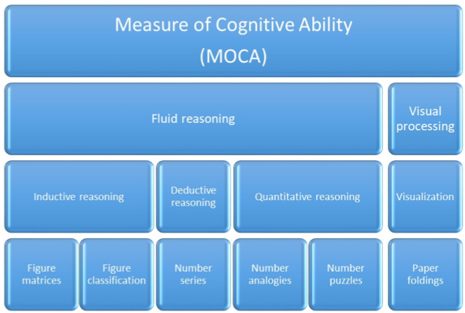

Measure of Cognitive Ability (MOCA) is a nonverbal cognitive ability assessment tool for use in both educational and clinical settings. In educational settings, the test can be used for individuals aged 6 years 0 month through 21 years 11 months (from elementary school students to college students) and the test can also be tailored to be used for testing different age groups for example: consists of items for three age groups: age group 1 (elementary school grades 1-3), age group 2 (elementary school grades 4-5) and age group 3 (middle school and higher graders). A test for each age group is composed of 36 items, and the test is administered for 40 minutes. It can be administered individually or as a group test. This test is intended to use for individuals with diverse cultural or linguistic backgrounds and those with language deficit due to speech or hearing impairments, developmental delays, and language-based learning disabilities. In clinical settings, the test can also be used in a tailored form fitting to each clinic in various purposes including cognitive behavior therapy. After the development of a scale for cognition for the age from 6 years 0 months and 21 years 11 months, the characteristics of items can be utilized to compose a test in each clinical setting. The current version of the MOCA is a language-reduced nonverbal cognitive ability test with verbal directions, and the final version of the MOCA will be revised to be a completely nonverbal cognitive ability test.
The theoretical foundation of the MOCA is based on the Cattell-Horn-Carroll theory of cognitive abilities (CHC theory; Flanagan & Ortiz, 2001; Schneider & McGrew, 2012, 2018). The MOCA will include various and broad abilities addressed in the CHC theory such as fluid reasoning, quantitative knowledge, visual processing, working memory, reaction/decision time, and processing speed. As the first stage of the development of the MOCA, the current version of the MOCA covers two major broad abilities: fluid reasoning and visual processing using six sub-tests to measure those broad abilities. In the MOCA, the fluid reasoning refers to the ability to solve unfamiliar problems without relying on previous knowledge, and there are three narrow abilities within the fluid reasoning ability: induction, general sequential reasoning (deductive reasoning), and quantitative reasoning. In the current MOCA, inductive, deductive (sequential), and quantitative reasoning all are assessed. Inductive reasoning is defined as “the ability to discern rules and patterns in what is observed.” (Schneider & Newman, 2015, p. 21) and is measured in the two sub-tests named as figure matrices and figure classification. Deductive (sequential) reasoning defined as “the ability to reason logically using known premises and principles” (Schneider & McGrew, 2018) is assessed in the number series. Quantitative reasoning, which refers to “the ability to reason with quantities, mathematical relations, and operators” (Schneider & McGrew, 2018), is assessed in the two other sub-tests, number analogies and number puzzles. The Visual Processing refers to the ability to use visual imagery to solve certain problem, and one narrow ability, visualization within the visual processing, is measured in the sub-test, paper foldings.

Figure 1 Structure of Cognitive Ability implemented in MOCA
The MOCA, a comprehensive and efficient nonverbal assessment, has been developed from a strong theoretical model, the CHC theory in which cognitive ability is considered as a hierarchical and multidimensional structure. The MOCA has also been developed by utilizing Automatic Item Generation (AIG). It is very useful when the demand for repeated measures exists and when many examinees should be assessed at a time. The computerized adaptive method, AIG, works for reducing cost of developing items and minimizing item exposure, practice effect in a situation of repeated measures. In addition, the online administration format allows this test to be a user-friendly and easily accessible assessment tool. MOCA development team has worked on the examination of psychometric properties of the MOCA using empirical data collected from South Korea. I believe that the MOCA will serve as a stand-alone assessment tool for cognitive ability in both educational and clinical settings.
Thank you for your interest.
Sincerely,
Ji Hoon Ryoo, Ph.D.